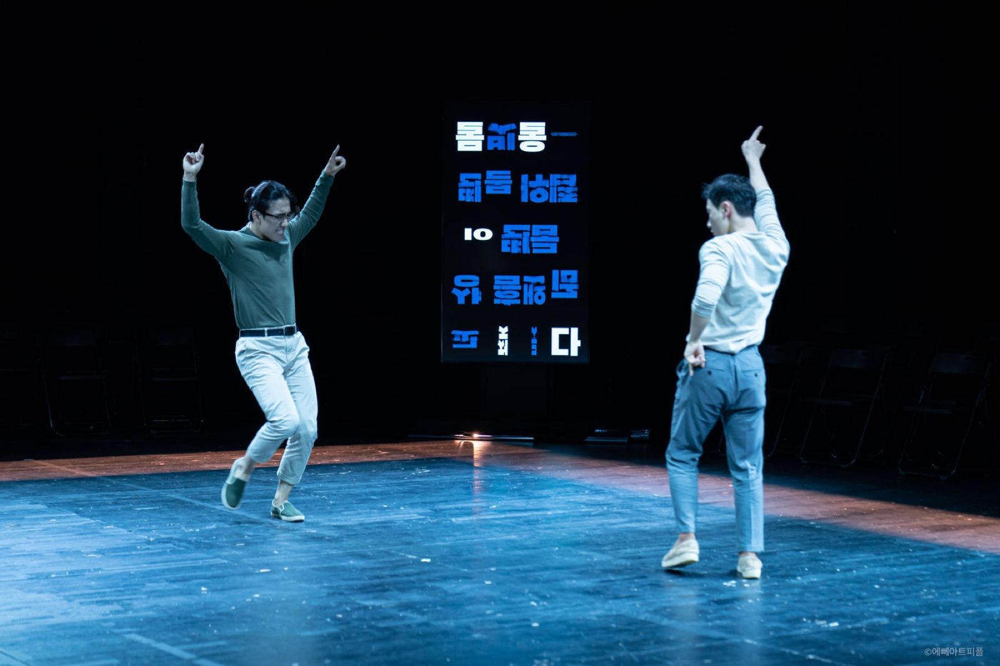
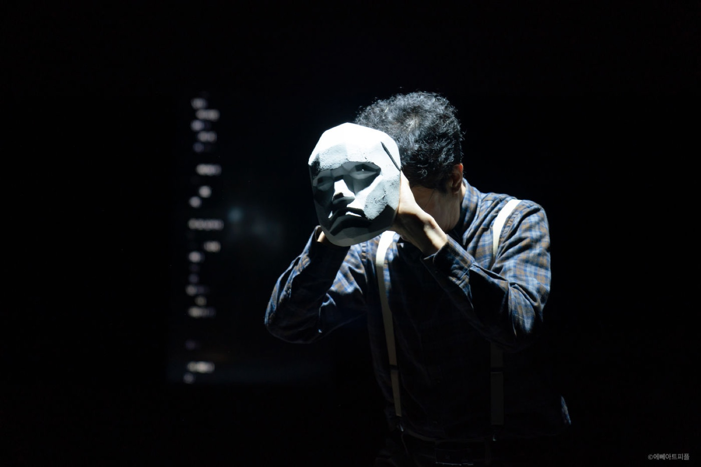
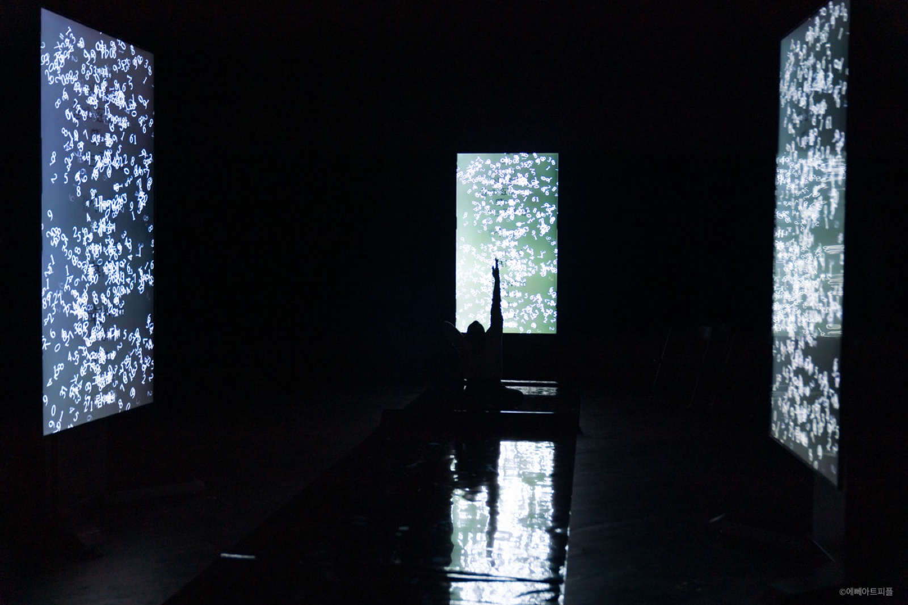

Performance — 2022
Paphos
시를 쓰는 AI ‘SIA’의 텍스트와 함께, 시와 수학·예술과 기술 사이의 틈을 관객의 상상으로 채우는 시극.
A poetry play built on texts from the AI poet ‘SIA’, inviting the audience to fill the gap between poetry and math, art and technology, with their own imagination.
시극 ‘파포스’는 예술과 기술, 시와 수학 사이의 간극과 접점을 무대 위에 드러내고, 관객이 그 시적 여백을 스스로의 상상과 감상으로 채우도록 이끄는 작품입니다. ‘시란 무엇인가’, ‘인간과 AI의 차이는 무엇인가’라는 근본적인 질문을 넘어, 공연을 통해 관객이 ‘시’를 이해하고 감상하고 즐기도록 돕습니다.
시 쓰는 AI ‘SIA’가 생성한 텍스트는 그 자체로는 무의미합니다. 이 작업은 무의미함을 안과 밖의 구분이 없는 경계로 재정의하고, 시란 의미의 존재 여부를 확정할 수 없는 확률적 상태 — 슈뢰딩거의 고양이 상자와 같은 중첩 상태이자, 블랙박스 같은 헤아릴 수 없는 지각의 공간이라는 상상적 가설을 세웁니다. 시와 수학이 반복되는 패턴을 통해 의미를 만들어낸다는 믿음 아래, 각 장면은 수학적 패턴의 반복을 참조해 구성되었고, 배우들의 표현은 ‘말하기(speaking)’로 명명되어 다양한 표현 방식을 탐구했습니다.
제목 ‘파포스’는 인간과 기계의 관계를 상징하는 피그말리온 신화에서 따왔습니다. 그는 조각가 피그말리온과 그의 조각상 갈라테아 사이에서 태어난 아이입니다. 이 작품은 AI 시아와 함께 만들어진 파포스적 존재이자, 잃어버린 시심(詩心)을 찾아가는 탐색입니다.
Paphos surfaces the gaps and points of contact between art and technology, poetry and math, inviting audiences to fill those poetic gaps with their own imagination. It goes beyond the fundamental questions “what is poetry?” and “what separates humans from AI?” to help audiences understand and enjoy poetry through performance. The AI poet SIA’s text is, on its own, meaningless — the work redefines meaninglessness as a boundary with no inside or outside, imagining poetry as a probabilistic, superposed state, like Schrödinger’s cat or an inscrutable black box. Each scene references the repetition of mathematical pattern, and the actors’ expression is framed as “speaking.” The title comes from the Pygmalion myth — Paphos, the child of the sculptor and his statue Galatea — a search for a lost poetic heart made with the AI Sia.
- 시리즈
- Series
- The Child Who Writes Poetry (2021) → Paphos (2022) → Paphos 2.0 (2023)
- 키워드
- Keywords
- AI poet SIA · quantum superposition · poetry & math · Pygmalion & Galatea
창작 배경 — 작가로 데뷔한 인공지능
Creation — An AI’s Playwriting Debut
시아, 작가 크레딧에 오르다
SIA takes the playwright’s credit
‘파포스’의 출발점은 2018년, ‘언어 공간의 법칙을 벗어난 문법적 오류의 경계에서 오히려 시가 잘 써진다’는 이야기였습니다. 시를 쓰는 인공지능 시아(SIA)는 2021년 처음 개발되어 ‘시 쓰는 아이’ 쇼케이스에서 소개되었고, 2022년 카카오브레인과의 협력으로 초거대 언어모델 KoGPT를 활용해 한국 근현대 시 1만 2천여 편을 학습하며 한층 발전했습니다.
전작이 시아의 시를 퍼포먼스로 표현했다면, 파포스에서 시아는 텍스트 자체가 대본이 되어 작가(作)로 데뷔하고 작가 크레딧에 이름을 올립니다. 첫 연습에서 배우들은 사람이 쓰지 않은 대본을 어떻게 바라봐야 할지 혼란스러워했지만, 연습이 무르익으며 시아의 텍스트를 작가의 글처럼 자연스럽게 받아들여 갔습니다. 정해진 해석 대신 배우들의 소리와 움직임 워크숍으로 의미를 찾아가는 방법론이 무대를 만들었고, 시아의 텍스트는 ‘의미가 있다/없다’가 아니라 양자역학처럼 의미가 중첩된 상태로 다뤄졌습니다.
Paphos began with a remark from 2018 — that poetry is often written best at the boundary of grammatical error, where the laws of language space break down. The poetry-writing AI SIA, first developed in 2021 and introduced in the showcase ‘The Child Who Writes Poetry,’ was further developed in 2022 in collaboration with Kakao Brain, trained on some 12,000 modern and contemporary Korean poems through the large language model KoGPT. Where the previous work performed SIA’s poems, in Paphos SIA’s text itself became the script — SIA debuted as a playwright, credited by name. At the first rehearsal the actors were unsure how to approach a script no human had written; as rehearsals deepened, they came to receive SIA’s text as naturally as an author’s. Meaning was found through voice and movement workshops rather than fixed interpretation, and SIA’s text was treated not as meaningful or meaningless, but as a superposition of both.
- 연출
- Direction
- Kim Jae Min (김제민)
- 시아 개발
- SIA Development
- Slitscope (김근형 · 김제민) × Kakao Brain
- 출연
- Cast
- 박윤석 · 박병호 · 류이재 · 김수훈 · 이혜민
- 조명
- Lighting
- 성미림 · 정주연
- 전자음악
- Electronic Music
- 윤제호
- 영상
- Video
- 김재희
- 무대감독 · 조연출
- Stage Manager · Assistant Directors
- 강현욱 · 신민승 · 조현기
- 기획·홍보
- Production & PR
- 코르코르디움
Daehakro Arts Theater Small Hall, Seoul — 2022

